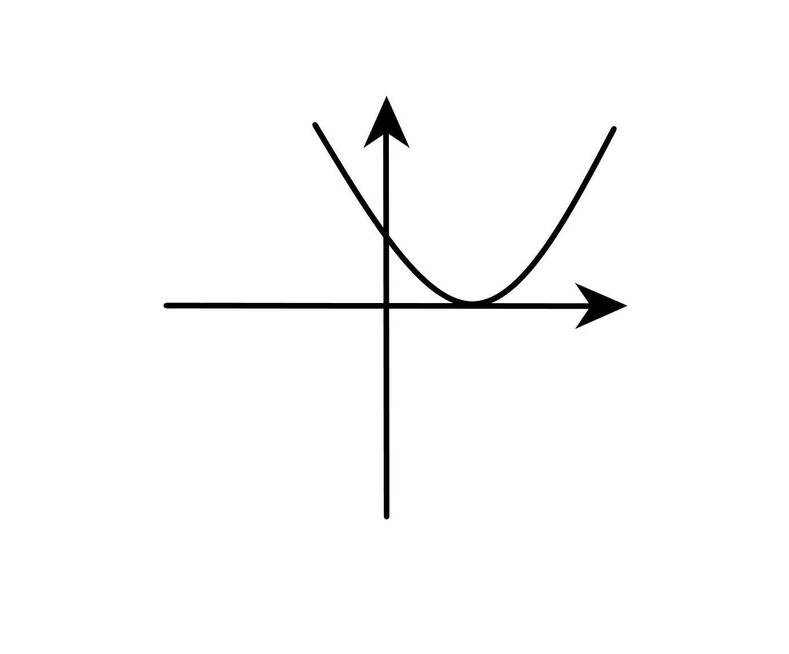
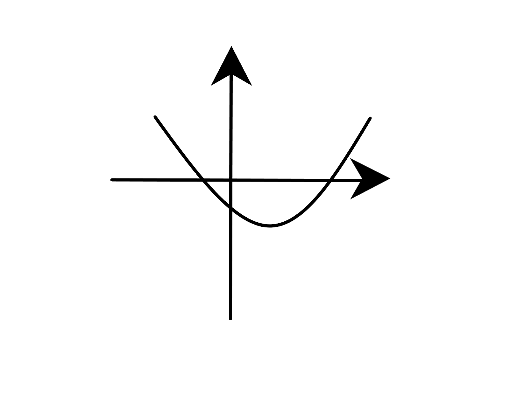
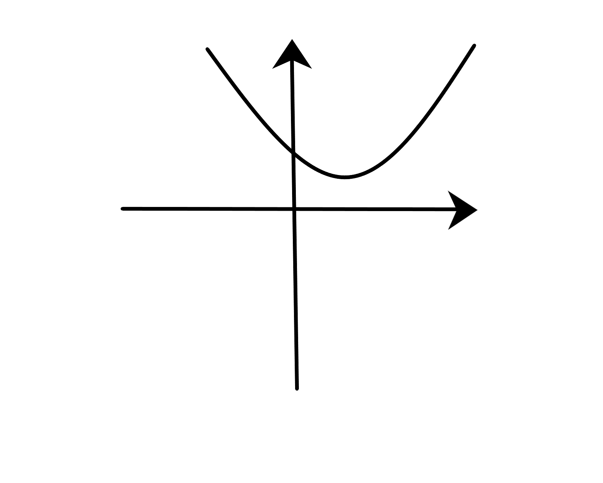

In matematica, discriminantul ( Δ ) este o cantitate care depinde de coeficientii ecuatiei si ne ajuta sa aflam radacinile un ei ecuatii fara a le cauta.
Mai precis, este o functie de gradul 2 a coeficientilor functiei originale.
(delta)=b^2-4ac
Dupa semnul lui Δ , putem afla daca:
- Functia este tangenta la grafic, in cazul in care Δ =0

- Functia are varful sub (sau deasupra, in functie de a) grafic, cand Δ >0

- Functia nu atinge graficul, cand Δ <0.

Discriminantul este prezent si in forma canonica a functiei de gradul 2:
f(x)=a(x+b/2a)
2- Δ /4a